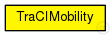
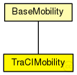

This documentation is released under the Creative Commons license
This documentation is released under the Creative Commons licenseUsed in modules created by the TraCIScenarioManager.
This module relies on the TraCIScenarioManager for state updates and can not be used on its own.
See the Veins website for a tutorial, documentation, and publications .
Author: Christoph Sommer, David Eckhoff, Luca Bedogni, Bastian Halmos, Stefan Joerer
See also: TraCIScenarioManager
See also: TraCIScenarioManagerLaunchd
The following diagram shows usage relationships between types. Unresolved types are missing from the diagram. Click here to see the full picture.
The following diagram shows inheritance relationships for this type. Unresolved types are missing from the diagram. Click here to see the full picture.
| Name | Type | Description |
|---|---|---|
| BaseMobility | simple module |
Module which is responsible for mobility related information like position and movement BaseMobility itself defines a static mobility pattern (means only a position, no movement). Mobility modules which extend from this module will define more complex movement patterns. |
| Name | Type | Default value | Description |
|---|---|---|---|
| notAffectedByHostState | bool | true | |
| coreDebug | bool | false |
debug switch for the core framework |
| x | double |
x coordinate of the nodes' position (-1 = random) |
|
| y | double |
y coordinate of the nodes' position (-1 = random) |
|
| z | double |
z coordinate of the nodes' position (-1 = random) |
|
| debug | bool | false |
debug switch |
| antennaPositionOffset | double | 0.0m |
position offset of the antenna of the front of the car |
| accidentCount | int | 0 |
number of accidents |
| accidentStart | double | uniform(30s,60s) |
time until first accident, relative to departure time |
| accidentDuration | double | uniform(30s,60s) |
duration of accident |
| accidentInterval | double | uniform(30s,60s) |
time between accidents |
| Name | Value | Description |
|---|---|---|
| display | i=block/cogwheel | |
| class | Veins::TraCIMobility |
// // Used in modules created by the TraCIScenarioManager. // // This module relies on the TraCIScenarioManager for state updates // and can not be used on its own. // // See the Veins website <a href="http://veins.car2x.org/"> for a tutorial, documentation, and publications </a>. // // @author Christoph Sommer, David Eckhoff, Luca Bedogni, Bastian Halmos, Stefan Joerer // // @see TraCIScenarioManager // @see TraCIScenarioManagerLaunchd // simple TraCIMobility extends BaseMobility { parameters: @class(Veins::TraCIMobility); @display("i=block/cogwheel"); bool debug = default(false); // debug switch double antennaPositionOffset @unit("m") = default(0.0m); // position offset of the antenna of the front of the car int accidentCount = default(0); // number of accidents double accidentStart @unit("s") = default(uniform(30s,60s)); // time until first accident, relative to departure time volatile double accidentDuration @unit("s") = default(uniform(30s,60s)); // duration of accident volatile double accidentInterval @unit("s") = default(uniform(30s,60s)); // time between accidents }
This documentation is released under the Creative Commons license